
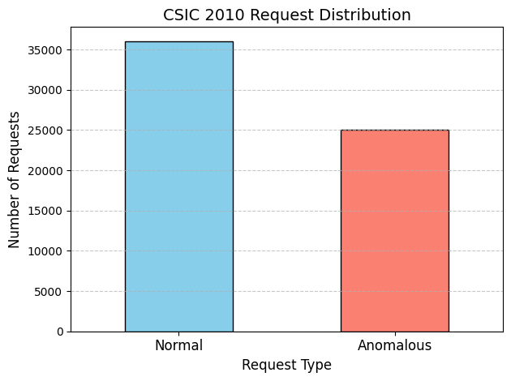
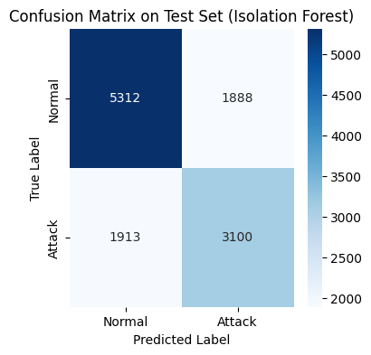
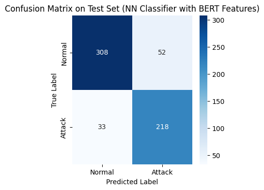
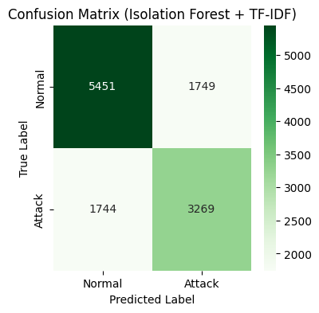

Tutorial 2.3: Analyzing Application-Layer Protocols


In this tutorial, we transition from analyzing generic network traffic (e.g., KDD Cup 99) to focusing specifically on threats targeting application-layer protocols, particularly web applications.
Web applications form the backbone of modern digital services, yet they are also among the most exposed components in a networked system. Attacks such as SQL Injection, Cross-Site Scripting (XSS), and Parameter Tampering exploit vulnerabilities in application-layer logic rather than low-level network protocols.
Tutorial Objectives
By the end of this tutorial, you will be able to:
Explain key categories of web application attacks (SQLI, XSS, parameter tampering).
Process raw HTTP requests (header and body) and prepare them for machine learning analysis.
Understand the importance of robust feature engineering in application-layer protocol attack detection.
Use state of the art Natural Language Processing to generate Features for attack detection in HTTP requests.
Dataset Composition and Anomalies
In this tutorial we’re working with the CSIC 2010 Web Application Attacks Dataset which is a synthetically generated and labeled benchmark corpus developed by the Spanish Research National Council (CSIC) for evaluating Web Application Firewalls (WAFs) and Intrusion Detection Systems (IDSs). It provides both, normal and malicious HTTP requests, directed at a simulated e-commerce web application.
The CSIC 2010 dataset consists of approximately:
36,000 normal HTTP requests
25,000 anomalous HTTP requests
Attack Categories
Attack Type | Description |
|---|---|
SQL Injection | Exploiting input-validation flaws to manipulate backend SQL queries. |
Cross-Site Scripting (XSS) | Injecting malicious JavaScript or HTML into web pages viewed by other users. |
Parameter Tampering | Modifying GET/POST parameters or cookies to alter application logic. |
Buffer Overflow | Sending oversized payloads that overflow memory buffers. |
Information Gathering | Attempting to extract server or application information (e.g., file disclosure, directory traversal). |
CRLF Injection | Inserting carriage-return/line-feed sequences to split HTTP responses. |
Unintentional Illegal Requests | Abnormal requests violating expected application behavior without explicit malicious intent. |
These categories together provide a rich and realistic evaluation environment for modern web-security models.
Data Structure and Features
Each record in the dataset corresponds to one HTTP request, parsed into multiple features representing different components of the request:
Feature Category | Example Features | Description |
|---|---|---|
Request Metadata | method, url, protocol | Basic request-line info (e.g., GET, POST, HTTP/1.1). |
Request Headers | userAgent, host, cookie, contentType, accept, connection | Client and session header fields. |
Request Content | contentLength, payload | Body length and content; often the attack vector. |
Target Label | label or classification | Ground-truth class: Normal or Anomalous. |
The feature-engineering challenge lies in encoding categorical headers and extracting meaningful representations from text-heavy fields such as url and payload, which frequently contain obfuscated attack patterns.
Structure of an HTTP Request
To analyze the CSIC 2010 dataset and detect attacks, it is essential to understand the basics of an HTTP request.
An HTTP request is the message sent by a client (for example, a web browser or an application) to a server in order to request data or perform an operation. It consists of several parts, each serving a specific function. An HTTP request has the following general structure:

Let’s break down the components step by step.
Method
Originally, the HTTP protocol was designed as an interface for distributed object systems and therefore allowed a wide variety of method tokens. With the introduction of REST systems, the available methods were standardized in RFC 7231.
In this tutorial, since the CSIC 2010 dataset is based on RESTful services, we will focus only on the following methods:
Method |
Description |
|---|---|
GET |
Retrieves data from the server. |
POST |
Sends new data to the server. |
PUT |
Replaces an existing resource with new data. |
PATCH |
Partially updates an existing resource. |
DELETE |
Removes a resource from the server. |
HEAD |
Same as GET, but retrieves only the headers, not the body. |
Request URI and Query String
The Request URI (Uniform Resource Identifier) specifies the resource that the client wants to access.
Optionally, a Query String can be appended to the URI to send additional key–value pairs to the server. This mechanism is defined in RFC 3986. The query string begins after a question mark (``?``), and multiple key–value pairs are separated by an ampersand (``&``).
Example:
test.php?key1=value1&key2=value2
Here:
test.php→ the target resource (URI)key1=value1&key2=value2→ the query string with two parameters
HTTP Header
The HTTP header is a section where the client can provide metadata about itself or about the request. Standard header fields are defined in RFC 2616, but developers can also add custom fields. If the server does not support a specific header field, it simply ignores it.
Each header line follows this structure:
Key: Value
and ends with a carriage return and line feed (CRLF).
Example:
Content-Type: application/json
User-Agent: Mozilla/5.0
HTTP Body
The HTTP body is separated from the header by an empty line (CRLF). It contains the data payload of the request—this is where the client sends information to the server (for example, form data, JSON, XML, or files). The format of the data depends on the target endpoint and is specified in the header field ``Content-Type``.
Example:
Content-Type: application/json
{
"username": "alice",
"password": "1234"
}
We start by loading the required libraries for this lab:
[2]:
import os
import pandas as pd
from glob import glob
import re
import time
import matplotlib.pyplot as plt
import seaborn as sns
import pandas as pd
import numpy as np
from sklearn.feature_extraction.text import TfidfVectorizer
from sklearn.preprocessing import StandardScaler
from sklearn.model_selection import train_test_split
from sklearn.ensemble import IsolationForest
from sklearn.metrics import confusion_matrix, classification_report
import torch
import torch.nn as nn
import torch.optim as optim
from torch.utils.data import DataLoader, TensorDataset
from transformers import BertTokenizer, BertModel
/Users/christophlandolt/.pyenv/versions/mlcysec25/lib/python3.12/site-packages/tqdm/auto.py:21: TqdmWarning: IProgress not found. Please update jupyter and ipywidgets. See https://ipywidgets.readthedocs.io/en/stable/user_install.html
from .autonotebook import tqdm as notebook_tqdm
Data Loading and Integration
pandas DataFrame for preprocessing.[3]:
# Dataset parameters
FILE = "csic-2010-web-application-attacks.zip"
DIR = "csic-2010-web-application-attacks"
URL = "https://www.kaggle.com/api/v1/datasets/download/ispangler/csic-2010-web-application-attacks"
# Download if not exists
if not os.path.isfile(FILE):
print(f"Downloading {FILE}...")
!curl -L -o {FILE} {URL}
else:
print(f"{FILE} already exists, skipping download.")
# Unzip if not exists
if not os.path.isdir(DIR):
print(f"Unzipping {FILE}...")
!unzip -q {FILE} -d {DIR}
else:
print(f"{DIR} already exists, skipping unzip.")
# Load all CSV files in the dataset folder into a single DataFrame
csv_files = glob(os.path.join(DIR, "*.csv"))
dfs = [pd.read_csv(f) for f in csv_files]
df = pd.concat(dfs, ignore_index=True)
# Show the first rows
df.head()
csic-2010-web-application-attacks.zip already exists, skipping download.
csic-2010-web-application-attacks already exists, skipping unzip.
[3]:
| Unnamed: 0 | Method | User-Agent | Pragma | Cache-Control | Accept | Accept-encoding | Accept-charset | language | host | cookie | content-type | connection | lenght | content | classification | URL | |
|---|---|---|---|---|---|---|---|---|---|---|---|---|---|---|---|---|---|
| 0 | Normal | GET | Mozilla/5.0 (compatible; Konqueror/3.5; Linux)... | no-cache | no-cache | text/xml,application/xml,application/xhtml+xml... | x-gzip, x-deflate, gzip, deflate | utf-8, utf-8;q=0.5, *;q=0.5 | en | localhost:8080 | JSESSIONID=1F767F17239C9B670A39E9B10C3825F4 | NaN | close | NaN | NaN | 0 | http://localhost:8080/tienda1/index.jsp HTTP/1.1 |
| 1 | Normal | GET | Mozilla/5.0 (compatible; Konqueror/3.5; Linux)... | no-cache | no-cache | text/xml,application/xml,application/xhtml+xml... | x-gzip, x-deflate, gzip, deflate | utf-8, utf-8;q=0.5, *;q=0.5 | en | localhost:8080 | JSESSIONID=81761ACA043B0E6014CA42A4BCD06AB5 | NaN | close | NaN | NaN | 0 | http://localhost:8080/tienda1/publico/anadir.j... |
| 2 | Normal | POST | Mozilla/5.0 (compatible; Konqueror/3.5; Linux)... | no-cache | no-cache | text/xml,application/xml,application/xhtml+xml... | x-gzip, x-deflate, gzip, deflate | utf-8, utf-8;q=0.5, *;q=0.5 | en | localhost:8080 | JSESSIONID=933185092E0B668B90676E0A2B0767AF | application/x-www-form-urlencoded | Connection: close | Content-Length: 68 | id=3&nombre=Vino+Rioja&precio=100&cantidad=55&... | 0 | http://localhost:8080/tienda1/publico/anadir.j... |
| 3 | Normal | GET | Mozilla/5.0 (compatible; Konqueror/3.5; Linux)... | no-cache | no-cache | text/xml,application/xml,application/xhtml+xml... | x-gzip, x-deflate, gzip, deflate | utf-8, utf-8;q=0.5, *;q=0.5 | en | localhost:8080 | JSESSIONID=8FA18BA82C5336D03D3A8AFA3E68CBB0 | NaN | close | NaN | NaN | 0 | http://localhost:8080/tienda1/publico/autentic... |
| 4 | Normal | POST | Mozilla/5.0 (compatible; Konqueror/3.5; Linux)... | no-cache | no-cache | text/xml,application/xml,application/xhtml+xml... | x-gzip, x-deflate, gzip, deflate | utf-8, utf-8;q=0.5, *;q=0.5 | en | localhost:8080 | JSESSIONID=7104E6C68A6BCF1423DAE990CE49FEE2 | application/x-www-form-urlencoded | Connection: close | Content-Length: 63 | modo=entrar&login=choong&pwd=d1se3ci%F3n&remem... | 0 | http://localhost:8080/tienda1/publico/autentic... |
[4]:
# Show the DataFrame columns
df.columns
[4]:
Index(['Unnamed: 0', 'Method', 'User-Agent', 'Pragma', 'Cache-Control',
'Accept', 'Accept-encoding', 'Accept-charset', 'language', 'host',
'cookie', 'content-type', 'connection', 'lenght', 'content',
'classification', 'URL'],
dtype='object')
[5]:
# Rename the column 'Unnamed: 0' to 'label'
df = df.rename(columns={'Unnamed: 0': 'label'})
Visualize the Dataset Distribution
[6]:
# Count class distribution
label_counts = df['label'].value_counts()
# Print numeric summary
print("Class distribution:")
print(label_counts)
# Plot
ax = label_counts.plot(
kind='bar',
color=['skyblue', 'salmon'],
edgecolor='black'
)
plt.title("CSIC 2010 Request Distribution", fontsize=14)
plt.xticks(rotation=0, fontsize=12)
plt.xlabel("Request Type", fontsize=12)
plt.ylabel("Number of Requests", fontsize=12)
plt.grid(axis='y', linestyle='--', alpha=0.7)
plt.tight_layout()
plt.show()
Class distribution:
label
Normal 36000
Anomalous 25065
Name: count, dtype: int64

Note: Unlike real-world network traffic, where attacks are typically very rare, the CSIC 2010 dataset is synthetically generated. This means the proportion of ‘Anomalous’ requests is intentionally high (around 41% of the total dataset). In a live, production environment, the class imbalance could be greater, with normal traffic greatly dominating the attack events.
Classic ML Pipeline: Data Preparation, Feature Engineering and Isolation Forest
We begin by establishing a classic Machine Learning anomaly detection pipeline using manually engineered features and an Isolation Forest model to set a performance benchmark.
Step 1: Data Preparation and Cleaning
The first steps involve loading all data, handling missing values, and preparing the target features for modeling.
[7]:
# The dataset is in the df DataFrame (loaded and renamed 'label' column).
dataset_data = df.copy() # Work on a copy
# 1. Handle missing values:
# Accept column: Replace NaN with the most common value (mode)
dataset_data['Accept'] = dataset_data['Accept'].fillna(dataset_data['Accept'].mode()[0])
# Columns: content-type, lenght, content: Replace NaN with "None" or "0"
dataset_data['content-type'] = dataset_data['content-type'].fillna('None')
dataset_data['lenght'] = dataset_data['lenght'].fillna('0')
dataset_data['content'] = dataset_data['content'].fillna('None')
# Create new feature: is_post (1 if POST method, 0 otherwise)
dataset_data['is_post'] = dataset_data['Method'].apply(lambda x: 1 if x == 'POST' else 0)
# 2. Remove unnecessary/redundant columns:
# 'label' column is the descriptive name (Normal/Anomalous), redundant with binary 'classification'.
dataset_data = dataset_data.drop(columns=['label'], errors='ignore')
print("Missing values after cleaning:")
print(dataset_data.isnull().sum().max())
Missing values after cleaning:
0
Step 2: Manual Feature Engineering and Normalization
We extract numerical features from the text-heavy fields (URL, content) and combine them with one-hot encoded categorical features to create a final 2D feature matrix.
[8]:
# Define a list of keywords commonly found in web attacks (SQL injection, XSS, etc.)
malicious_keywords = [
'SELECT', 'UNION', 'DROP', 'DELETE', 'FROM', 'WHERE', 'OR', 'LIKE', 'AND', '1=1', '--', '\'',
'SCRIPT', 'javascript', 'alert', 'iframe', 'src=', 'onerror', 'prompt', 'confirm', 'eval', 'onload',
'mouseover', 'onunload', 'document.', 'window.', 'xmlhttprequest', 'xhr', 'cookie',
'tamper', 'vaciar', 'carrito', 'incorrect', 'pwd', 'login', 'password', 'id',
'%0D', '%0A', '.php', '.js', 'admin', 'administrator'
]
# --- Manual Feature Engineering (Creation of 7 numerical features) ---
dataset_data['url_length'] = dataset_data['URL'].apply(len)
dataset_data['url_special_chars'] = dataset_data['URL'].apply(lambda x: len(re.findall(r'[%;=<>\/&\'"()\[\]#\-\+]', x)))
dataset_data['url_malicious_keywords'] = dataset_data['URL'].apply(lambda x: sum(1 for kw in malicious_keywords if kw.lower() in x.lower()))
dataset_data['url_params_count'] = dataset_data['URL'].apply(lambda x: x.count('&') + 1 if '?' in x else 0)
dataset_data['content_length'] = dataset_data['content'].fillna('').apply(len)
dataset_data['content_special_chars'] = dataset_data['content'].fillna('').apply(lambda x: len(re.findall(r'[%;=<>\/&\'"()\[\]#\-\+]', x)))
dataset_data['content_malicious_keywords'] = dataset_data['content'].fillna('').apply(lambda x: sum(1 for kw in malicious_keywords if kw.lower() in x.lower()))
# --- One-Hot Encoding ---
dataset_data = pd.get_dummies(dataset_data, columns=['Method', 'content-type'], prefix=['Method', 'content-type'], drop_first=True)
# --- Feature Combination (2D Matrix) ---
manual_features = dataset_data[['url_length', 'url_special_chars', 'url_malicious_keywords', 'url_params_count',
'content_length', 'content_special_chars', 'content_malicious_keywords',
'is_post']]
one_hot_features = dataset_data.filter(like='Method_|content-type_')
# Final 2D feature matrix
feature_matrix = np.hstack([manual_features.values, one_hot_features.values])
print("Total feature matrix size (2D):", feature_matrix.shape)
# --- Data Normalization ---
scaler = StandardScaler()
feature_matrix_scaled = scaler.fit_transform(feature_matrix)
# --- Data Split for Classic ML (2D data) ---
X_train_classic, X_test_classic, y_train_classic, y_test_classic = train_test_split(
feature_matrix_scaled,
dataset_data['classification'].values,
test_size=0.2,
random_state=42,
stratify=dataset_data['classification'].values
)
print(f"Classic ML Train Set Size: {X_train_classic.shape}")
Total feature matrix size (2D): (61065, 8)
Classic ML Train Set Size: (48852, 8)
Step 3: Attack Detection using Isolation Forest
We apply the Isolation Forest algorithm, which is an ensemble tree method specifically designed for anomaly detection. It works by isolating anomalies that require fewer splits in a tree structure compared to normal data points.
[9]:
# We use the 2D feature_matrix_scaled data split for training and testing.
# Input X_train_classic is guaranteed to be 2D.
# Initialize Isolation Forest model
contamination_rate = dataset_data['classification'].mean()
clf_if = IsolationForest(
contamination=contamination_rate, # Set to the actual anomaly rate (~0.41 for full CSIC)
random_state=42,
n_estimators=200,
n_jobs=-1
)
# Training
start_time = time.time()
clf_if.fit(X_train_classic) # Using the 2D matrix
training_time = time.time() - start_time
print(f"Training time (s): {training_time:.2f}")
# Prediction
start_time = time.time()
y_test_pred_if_raw = clf_if.predict(X_test_classic) # Using the 2D matrix
prediction_time = time.time() - start_time
print(f"Prediction time(s): {prediction_time:.2f}")
# Convert Isolation Forest output (-1: anomaly, 1: normal) to binary (1: anomaly, 0: normal)
y_test_pred_if = np.where(y_test_pred_if_raw == -1, 1, 0)
# --- Confusion Matrix ---
cm = confusion_matrix(y_test_classic, y_test_pred_if)
print("Confusion Matrix:\n", cm)
print("\nClassification Report:\n", classification_report(y_test_classic, y_test_pred_if, target_names=['Normal', 'Attack']))
# --- Plot Confusion Matrix ---
plt.figure(figsize=(4,4))
sns.heatmap(cm, annot=True, fmt='d', cmap='Blues', xticklabels=['Normal', 'Attack'], yticklabels=['Normal', 'Attack'])
plt.xlabel('Predicted Label')
plt.ylabel('True Label')
plt.title('Confusion Matrix on Test Set (Isolation Forest)')
plt.show()
Training time (s): 0.61
Prediction time(s): 0.07
Confusion Matrix:
[[5312 1888]
[1913 3100]]
Classification Report:
precision recall f1-score support
Normal 0.74 0.74 0.74 7200
Attack 0.62 0.62 0.62 5013
accuracy 0.69 12213
macro avg 0.68 0.68 0.68 12213
weighted avg 0.69 0.69 0.69 12213

Deep Learning Pipeline: Natural Language Processing (NLP) Feature Engineering with BERT
In this section, we pivot from classic machine learning methods that rely on hand-crafted features (like URL length, count of special characters) to a deep learning approach using BERT (Bidirectional Encoder Representations from Transformers). This method allows the model to automatically learn rich, contextualized features directly from the raw text payloads, often capturing subtle, obfuscated attack patterns that manual feature engineering might miss.
We will use the BERT embeddings as the input for a simple, fully connected Neural Network (NN) to perform the final attack classification.
Introduction to NLP and BERT
Natural Language Processing (NLP) is the field of AI focused on interpreting human language. In web security, we treat the text within HTTP requests (URLs, parameters, payloads) as the “language” to be scrutinized for malicious grammar.
BERT is a pre-trained language model that processes text bidirectionally, considering the entire context of a sequence. For a web attack detector, BERT is vital because it can:
Understand Attack Context: It assigns unique vector embeddings to tokens like
'SELECT','UNION', or'<script>', capturing their semantic and contextual roles in a malicious payload.Generate High-Quality Features: It converts the raw input string into a sequence of fixed-size, informative vectors, which form the feature set for our classifier.
(Note: To prepare the text for BERT’s fixed-length input, the ``URL`` and ``content`` fields are concatenated into a single sequence, and the dataset is heavily subsampled to manage the long processing time required for generating BERT embeddings.)
Step 1: Data Pre-processing and BERT Feature Extraction
We first combine the URL and content fields into a single payload, then initialize the BERT model to convert these text sequences into numerical feature vectors.
[10]:
# Checking and Using GPU if available
device = torch.device('cuda' if torch.cuda.is_available() else 'cpu')
print(f"Using device: {device}")
# Create a new column 'combined_payload' by concatenating URL and Content.
df['combined_payload'] = df['URL'] + ' ' + df['content'].fillna('')
# Convert classification label to integer type (0 or 1) for PyTorch
df['classification'] = df['classification'].astype(int)
# Subsample the data for efficiency and balancing (using 5% of each class)
df_normal = df[df['classification'] == 0]
df_anomalous = df[df['classification'] == 1]
n_normal = int(len(df_normal) * 0.05)
n_anomalous = int(len(df_anomalous) * 0.05)
df_sampled = pd.concat([
df_normal.sample(n=n_normal, random_state=42),
df_anomalous.sample(n=n_anomalous, random_state=42)
]).sample(frac=1, random_state=42).reset_index(drop=True)
print(f"Total sampled records for training: {len(df_sampled)}")
# Initialize BERT tokenizer and model
tokenizer = BertTokenizer.from_pretrained('bert-base-uncased')
bert_model = BertModel.from_pretrained('bert-base-uncased').to(device)
def extract_bert_features(texts, batch_size=2000, max_length=128):
"""
Extracts BERT features for a list of texts by processing them in batches.
The output is a sequence of embeddings: (num_samples, seq_len, embed_dim).
"""
features = []
for i in range(0, len(texts), batch_size):
batch = texts[i:i+batch_size]
inputs = tokenizer(batch, return_tensors='pt', truncation=True, padding='max_length', max_length=max_length)
inputs = {k: v.to(device) for k, v in inputs.items()}
with torch.no_grad():
outputs = bert_model(**inputs)
# Get the last hidden state (sequence of embeddings)
batch_features = outputs.last_hidden_state.cpu().numpy()
features.append(batch_features)
return np.vstack(features)
# Extracting Features from the SUBSAMPLED DataFrame
print("Extracting BERT features for CSIC Data...")
csic_texts = df_sampled['combined_payload'].tolist()
csic_features = extract_bert_features(csic_texts)
print("BERT CSIC Feature Shape (Samples, Sequence Length, Embedding Size):", csic_features.shape)
Using device: cpu
Total sampled records for training: 3053
Extracting BERT features for CSIC Data...
BERT CSIC Feature Shape (Samples, Sequence Length, Embedding Size): (3053, 128, 768)
Step 2: Preparing PyTorch DataLoaders
The BERT features (\(X\)) and binary labels (\(y\)) are split into training and testing sets, converted to PyTorch tensors, and wrapped in DataLoader objects.
[11]:
# Extract features (use the extracted features from the previous step)
X = csic_features
# Use the correct label column: 'classification'
y = df_sampled['classification'].values
# Splitting the Dataset (80% Train, 20% Test)
X_train, X_test, y_train, y_test = train_test_split(X, y, test_size=0.2, random_state=42, stratify=y)
# Converting Data to PyTorch Tensors
X_train_tensor = torch.FloatTensor(X_train).to(device)
y_train_tensor = torch.FloatTensor(y_train).unsqueeze(1).to(device) # Shape (N, 1) for BCELoss
X_test_tensor = torch.FloatTensor(X_test).to(device)
y_test_tensor = torch.FloatTensor(y_test).unsqueeze(1).to(device)
# Creating DataLoader
train_dataset = TensorDataset(X_train_tensor, y_train_tensor)
test_dataset = TensorDataset(X_test_tensor, y_test_tensor)
train_loader = DataLoader(train_dataset, batch_size=64, shuffle=True)
test_loader = DataLoader(test_dataset, batch_size=64, shuffle=False)
Step 3: Simple Neural Network Architecture (MLP)
We define a simple Multi-Layer Perceptron (MLP) classifier. Since BERT produces a sequence of vectors (e.g., 128 tokens \(\times\) 768 features), we use a Global Average Pooling layer to compress the sequence into a single, fixed-size feature vector per sample before feeding it into the MLP.
[12]:
class MLPClassifier(nn.Module):
"""
Simple MLP for classification using aggregated BERT embeddings.
"""
def __init__(self, input_dim):
super(MLPClassifier, self).__init__()
# AdaptiveAvgPool1d performs Global Average Pooling over the sequence dimension (128).
self.avg_pool = nn.AdaptiveAvgPool1d(1)
self.model = nn.Sequential(
nn.Linear(input_dim, 128), # Input_dim = 768 (after pooling)
nn.Tanh(),
nn.Dropout(0.3),
nn.Linear(128, 64),
nn.Tanh(),
nn.Dropout(0.3),
nn.Linear(64, 1),
nn.Sigmoid() # Output probability for binary classification
)
def forward(self, x):
# x shape: (batch_size, sequence_length, input_dim) -> (Batch, 128, 768)
# 1. Transpose for AvgPool1d: (Batch, 128, 768) -> (Batch, 768, 128)
x = x.transpose(1, 2)
# 2. Global Average Pool: (Batch, 768, 1)
x = self.avg_pool(x)
# 3. Squeeze to (Batch, 768)
x = x.squeeze(2)
# 4. Feed into MLP
return self.model(x)
# Instantiate the model
input_dim = 768
model = MLPClassifier(input_dim).to(device)
Step 5: Training and Evaluation
The model is trained using Binary Cross-Entropy Loss and the Adam optimizer, and then evaluated on the test set.
[13]:
# Loss and Optimizer
criterion = nn.BCELoss()
optimizer = optim.Adam(model.parameters(), lr=0.001)
# --- Training loop execution ---
n_epochs = 20
train_losses = []
test_losses = []
for epoch in range(n_epochs):
# --- Training ---
model.train()
running_loss = 0.0
for X_batch, y_batch in train_loader:
optimizer.zero_grad()
outputs = model(X_batch)
loss = criterion(outputs, y_batch)
loss.backward()
optimizer.step()
running_loss += loss.item() * X_batch.size(0)
epoch_train_loss = running_loss / len(train_loader.dataset)
# --- Evaluation on test set ---
model.eval()
running_test_loss = 0.0
with torch.no_grad():
for X_batch, y_batch in test_loader:
outputs = model(X_batch)
loss = criterion(outputs, y_batch)
running_test_loss += loss.item() * X_batch.size(0)
epoch_test_loss = running_test_loss / len(test_loader.dataset)
print(f"Epoch {epoch+1}/{n_epochs} - Train Loss: {epoch_train_loss:.4f} - Test Loss: {epoch_test_loss:.4f}")
# Final Evaluation on Test Set
model.eval()
with torch.no_grad():
y_pred = model(X_test_tensor)
y_pred_label = (y_pred >= 0.5).float()
# Calculate Metrics
y_true_np = y_test_tensor.cpu().numpy()
y_pred_np = y_pred_label.cpu().numpy()
cm = confusion_matrix(y_true_np, y_pred_np)
cr = classification_report(y_true_np, y_pred_np, target_names=['Normal', 'Attack'])
# --- Confusion Matrix ---
print("Confusion Matrix:\n", cm)
print("\nClassification Report:\n", cr)
# --- Plot Confusion Matrix ---
plt.figure(figsize=(4,4))
sns.heatmap(cm, annot=True, fmt='d', cmap='Blues', xticklabels=['Normal', 'Attack'], yticklabels=['Normal', 'Attack'])
plt.xlabel('Predicted Label')
plt.ylabel('True Label')
plt.title('Confusion Matrix on Test Set (NN Classifier with BERT Features)')
plt.show()
Epoch 1/20 - Train Loss: 0.6009 - Test Loss: 0.5672
Epoch 2/20 - Train Loss: 0.5125 - Test Loss: 0.4791
Epoch 3/20 - Train Loss: 0.4649 - Test Loss: 0.4407
Epoch 4/20 - Train Loss: 0.4017 - Test Loss: 0.4132
Epoch 5/20 - Train Loss: 0.3867 - Test Loss: 0.3757
Epoch 6/20 - Train Loss: 0.3600 - Test Loss: 0.3754
Epoch 7/20 - Train Loss: 0.3521 - Test Loss: 0.3456
Epoch 8/20 - Train Loss: 0.3472 - Test Loss: 0.4075
Epoch 9/20 - Train Loss: 0.3443 - Test Loss: 0.3035
Epoch 10/20 - Train Loss: 0.3026 - Test Loss: 0.3021
Epoch 11/20 - Train Loss: 0.2913 - Test Loss: 0.3248
Epoch 12/20 - Train Loss: 0.3066 - Test Loss: 0.2763
Epoch 13/20 - Train Loss: 0.2994 - Test Loss: 0.2721
Epoch 14/20 - Train Loss: 0.2955 - Test Loss: 0.2707
Epoch 15/20 - Train Loss: 0.2685 - Test Loss: 0.2786
Epoch 16/20 - Train Loss: 0.2867 - Test Loss: 0.2992
Epoch 17/20 - Train Loss: 0.3008 - Test Loss: 0.2662
Epoch 18/20 - Train Loss: 0.2497 - Test Loss: 0.2450
Epoch 19/20 - Train Loss: 0.2629 - Test Loss: 0.2454
Epoch 20/20 - Train Loss: 0.2453 - Test Loss: 0.2527
Confusion Matrix:
[[308 52]
[ 33 218]]
Classification Report:
precision recall f1-score support
Normal 0.90 0.86 0.88 360
Attack 0.81 0.87 0.84 251
accuracy 0.86 611
macro avg 0.86 0.86 0.86 611
weighted avg 0.86 0.86 0.86 611

Exercises
Exercise 1: Enhancing Classic ML with NLP Features (TF-IDF)
In the previous steps, the Isolation Forest model relied primarily on manual features (e.g., length, special character count). While simple, this approach ignores the semantic content (the actual words) in the URL and content fields, which often contain complex attack payloads.
Term Frequency-Inverse Document Frequency (TF-IDF) is a statistical measure used to reflect how important a word is to a document in a collection or corpus. It is calculated as the product of two terms: Term Frequency (TF) and Inverse Document Frequency (IDF):
where:
Term Frequency (TF(t, d)): Measures how often a term \(t\) appears in a document \(d\).
Inverse Document Frequency (IDF(t)): Measures how rare the term \(t\) is across all documents in the corpus.
In anomaly detection, TF-IDF is valuable because it assigns a high weight to rare, specific terms (like obfuscated attack keywords) that are prevalent in anomalous samples but rare in the normal traffic corpus.
Task: Use the TfidfVectorizer from sklearn.feature_extraction.text to generate features from the URL and content fields, combine them with the existing manual features, and evaluate the Isolation Forest performance against the manual-feature-only baseline.
[14]:
# Task Steps:
# 1. TF-IDF Transformation: Use TfidfVectorizer on 'URL' and 'content' fields.
# 2. Feature Combination: Create a new feature matrix by horizontally stacking the manual, one-hot, and new TF-IDF features.
# 3. Modeling: Standardize the new feature matrix and train/evaluate a new Isolation Forest model.
Solution - Exercise 1: Enhancing Classic ML with NLP Features (TF-IDF)
[15]:
import scipy.sparse
from sklearn.feature_extraction.text import TfidfVectorizer
# --- Step 1: Text Preparation ---
# Combine URL and Content into a single string for each request to capture the full context.
# We ensure NaNs are treated as empty strings.
text_data = dataset_data['URL'] + " " + dataset_data['content'].fillna('')
# --- Step 2: TF-IDF Vectorization ---
# We limit max_features to 500 to prevent the feature space from exploding,
# which would make the Isolation Forest too slow and prone to the curse of dimensionality.
tfidf_vectorizer = TfidfVectorizer(max_features=500, stop_words='english')
tfidf_features = tfidf_vectorizer.fit_transform(text_data)
# Convert to dense array for easy stacking with our previous features
# (Note: For very large datasets, keep it sparse, but for 60k rows, dense is manageable)
tfidf_features_dense = tfidf_features.toarray()
print(f"TF-IDF Feature Matrix Shape: {tfidf_features_dense.shape}")
# --- Step 3: Feature Combination ---
# We retrieve the previous manual and one-hot features
# manual_features and one_hot_features were defined in the tutorial's "Manual Feature Engineering" step
current_features = np.hstack([manual_features.values, one_hot_features.values])
# Stack the new NLP features horizontally with the existing manual features
combined_matrix = np.hstack([current_features, tfidf_features_dense])
print(f"Combined Feature Matrix Shape: {combined_matrix.shape}")
# --- Step 4: Standardization ---
# It is crucial to scale the combined data so TF-IDF scores (0-1 range) don't dominate
# or get drowned out by features like 'content_length' (0-10000+ range).
scaler_tfidf = StandardScaler()
combined_matrix_scaled = scaler_tfidf.fit_transform(combined_matrix)
# --- Step 5: Train-Test Split ---
X_train_tfidf, X_test_tfidf, y_train_tfidf, y_test_tfidf = train_test_split(
combined_matrix_scaled,
dataset_data['classification'].values,
test_size=0.2,
random_state=42,
stratify=dataset_data['classification'].values
)
# --- Step 6: Isolation Forest Training & Evaluation ---
print("Training Isolation Forest with TF-IDF features...")
# Initialize model with same parameters as baseline for fair comparison
clf_if_tfidf = IsolationForest(
contamination=contamination_rate,
random_state=42,
n_estimators=200,
n_jobs=-1
)
# Train
start_time = time.time()
clf_if_tfidf.fit(X_train_tfidf)
print(f"Training time: {time.time() - start_time:.2f}s")
# Predict
y_test_pred_raw = clf_if_tfidf.predict(X_test_tfidf)
y_test_pred_tfidf = np.where(y_test_pred_raw == -1, 1, 0)
# --- Step 7: Results ---
cm_tfidf = confusion_matrix(y_test_tfidf, y_test_pred_tfidf)
print("\n--- Results with TF-IDF Features ---")
print("Confusion Matrix:\n", cm_tfidf)
print("\nClassification Report:\n", classification_report(y_test_tfidf, y_test_pred_tfidf, target_names=['Normal', 'Attack']))
# Visual Comparison
plt.figure(figsize=(4,4))
sns.heatmap(cm_tfidf, annot=True, fmt='d', cmap='Greens', xticklabels=['Normal', 'Attack'], yticklabels=['Normal', 'Attack'])
plt.title('Confusion Matrix (Isolation Forest + TF-IDF)')
plt.ylabel('True Label')
plt.xlabel('Predicted Label')
plt.show()
TF-IDF Feature Matrix Shape: (61065, 500)
Combined Feature Matrix Shape: (61065, 508)
Training Isolation Forest with TF-IDF features...
Training time: 0.70s
--- Results with TF-IDF Features ---
Confusion Matrix:
[[5451 1749]
[1744 3269]]
Classification Report:
precision recall f1-score support
Normal 0.76 0.76 0.76 7200
Attack 0.65 0.65 0.65 5013
accuracy 0.71 12213
macro avg 0.70 0.70 0.70 12213
weighted avg 0.71 0.71 0.71 12213

Conclusion
This tutorial we explored two different approaches for detecting application-layer web attacks using the CSIC 2010 dataset. First, we used a Classic ML Pipeline, relying on manual feature engineering (length, special characters) and the Isolation Forest. Second, we used a Deep Learning Pipeline, leveraging BERT for automated, contextualized feature extraction from raw text payloads, which showed the potential for superior performance in capturing subtle attack semantics.
 If you found this tutorial helpful, please ⭐ star our repository to show your support.
If you found this tutorial helpful, please ⭐ star our repository to show your support. For any questions, typos, or bugs, kindly open an issue on GitHub — we appreciate your feedback!
For any questions, typos, or bugs, kindly open an issue on GitHub — we appreciate your feedback!